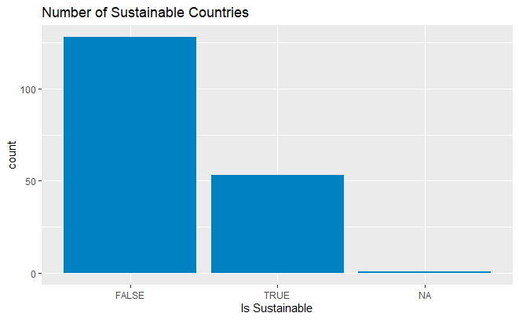
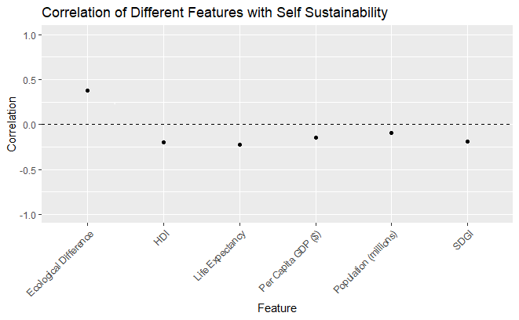
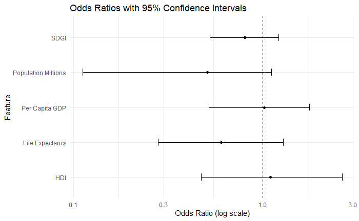

The Correlation Between General Statistics of a Country and Self-Sustainability
Aayan Goyal
Abstract
write at the end
Background
Despite wanting to help improve the earth’s climate crisis, we of course still want to improve other aspects of human life. However, many developments we make in these other aspects harm our climate. Thus, in order to progress in both the climate efforts and other aspects, it is necessary to know which of the non-climate developments harm the climate. If this information is known, then we can work to mitigate the detriment that these development have on the climate.
To find these conflicting developments I asked the question: What is the correlation between a country’s general statistics (population, life expectancy, etc.) and its self-sustainability? By knowing which variables correlate, it is easier to pinpoint which developments either help or conflict with sustainability. To answer this question, I used analyzed data from the 2023 Global Ecological Footprint Report.
- Note: SDGI is a measurement of how much a country is achieving the Sustainable Development Goals set out by the UN.
Results
Figure 1 - The Distribution of Self-Sustainable Countries: This plot shows the number of countries that are sustainable or not. A country was defined to be sustainable if it had an ecological reserve (being able to produce more natural resources that it consumed). The vast majority of countries were not sustainable.
Figure 2 - Pearson Correlation Between General Statistics and Self-Sustainability: This plot shows the pearson correlation between the countries’ general statistics and self-sustainability. Note: Since ecological difference is the same as ecological reserve and therefore directly decides self-sustainability, it will have a positive correlation. All of the general statistics had a weak negative correlation with self-sustainability suggesting that they all harm the climate in minor ways.
ANOVA Test (doesn’t have a figure): I ran an ANOVA test on SDGI and life expectancy (as they had the highest pearson correlation). I started by splitting the features into four bins. The null hypothesis for the test was: “There is no significant difference in the means of the eco_difference between each of the bins.” I used a standard significance value of 0.05.
SDGI - The ANOVA for SDGI returned a p-value of 0.2. This suggests that there is not a statistically significant difference between values of SDGI.
Life Expectancy - The ANOVA for life expectancy returned a p-value of 0.00000425. This suggests that there is a statistically significant difference between values of life expectancy.
Figure 3 - Odds Ratios from the Logistic Regression Model: This figure shows the odd ratios of a logistic regression model that used the general statistics to predict whether a country would be self-sustainable or not. It is important to note that the model only had a classification accuracy of 72%. It is difficult to say whether the lack of accuracy is due to a lack of data, or a lack of correlation between the predictors and the target. That being said, here are the major takeaways from the odds ratios:
An increase in population makes the likelihood of a country being self-sustainable much less. This contradicts what was shown by the pearson correlation.
An increase in life expectancy makes the likelihood of a country being self-sustainable much less. This supports what was seen in the pearson correlation and the ANOVA test.
None of the features have a strong positive correlation with self-sustainability.
SDGI continues to show little correlation with self-sustainability.


